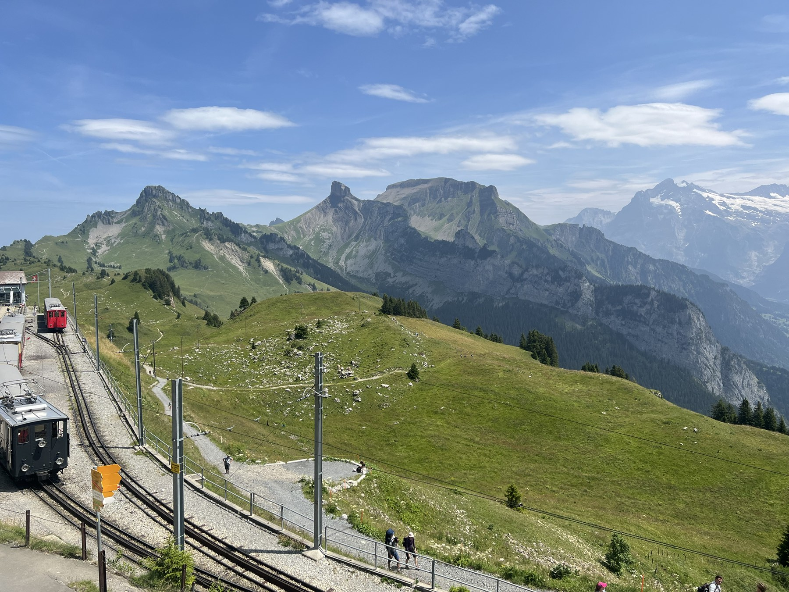
Panorama loop · Bernese Oberland
Schynige
Platte.
Mountain railway nostalgia and a compact ridge walk with some of the grandest views in Switzerland.
Why go · June–October
A front-row seat
to the high Alps.
Schynige Platte is a scenic mountain ridge above Wilderswil, famous for its historic cogwheel railway, Alpine botanical garden, and panoramic vistas of the Eiger, Mönch and Jungfrau.
From Brienz Villa
Getting there
is half the fun.
Allow time for the nostalgic mountain railway—the journey unfolds slowly through forest and pasture before arriving directly at the trail.
- 01
Brienz to Wilderswil
Drive and park at Wilderswil station, or travel by train via Interlaken Ost.
- 02
Ride the cogwheel railway
Take the historic train to Schynige Platte. Check the return timetable before hiking.
- 03
Walk the 3.6 km loop
Follow the marked ridge circuit from the station, climbing 283 metres to 2,076 metres.
- 04
Return to Brienz
Ride back to Wilderswil, then continue to Brienz by train or car.
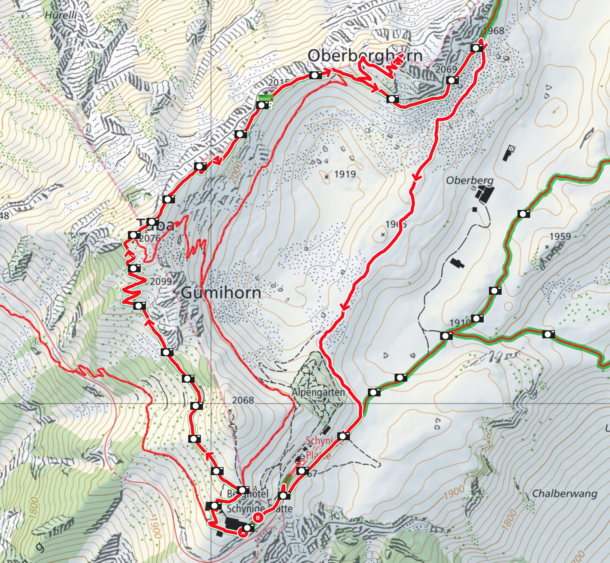
Route & elevation
Take the route
with you.
The loop begins and ends at the mountain station. It crosses exposed terrain and includes rocky sections and steps despite its modest distance.
Route and elevation graphic from SchweizMobil.
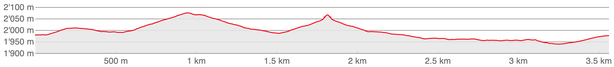
Along the trail
The ridge,
frame by frame.
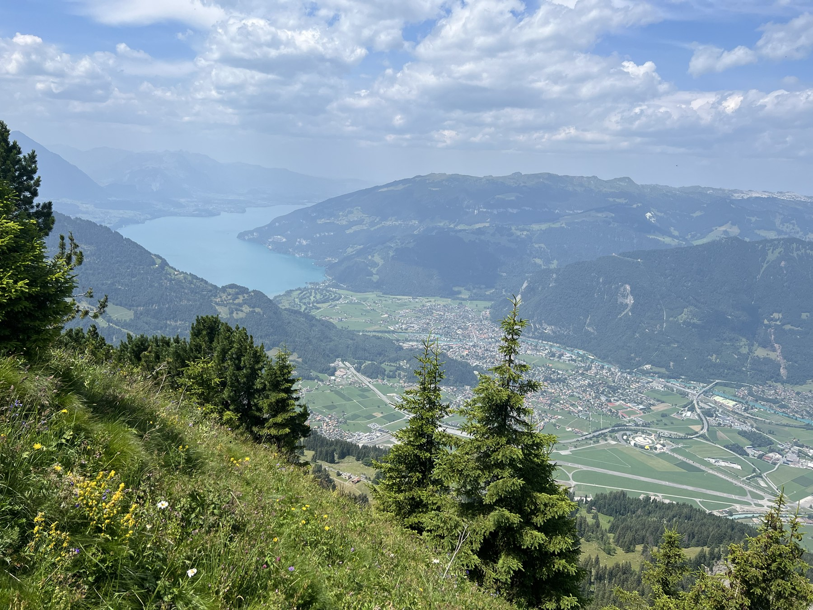
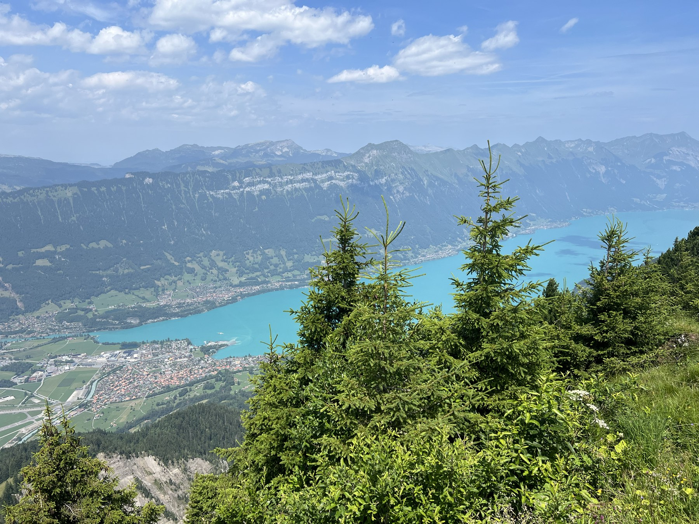
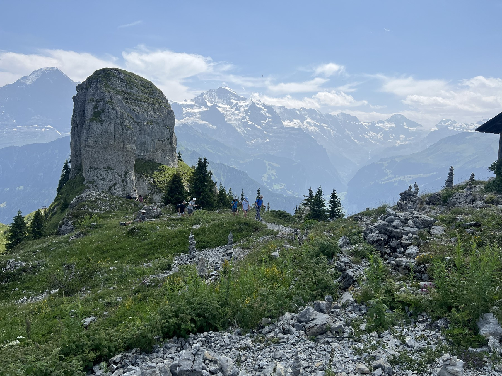
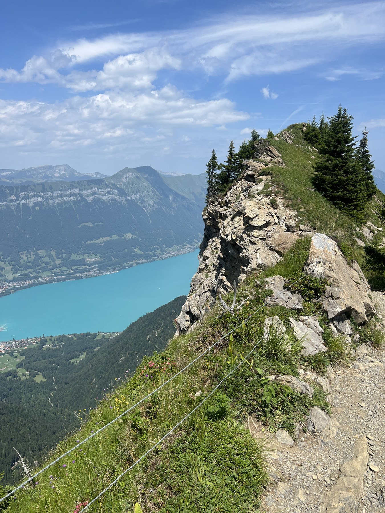
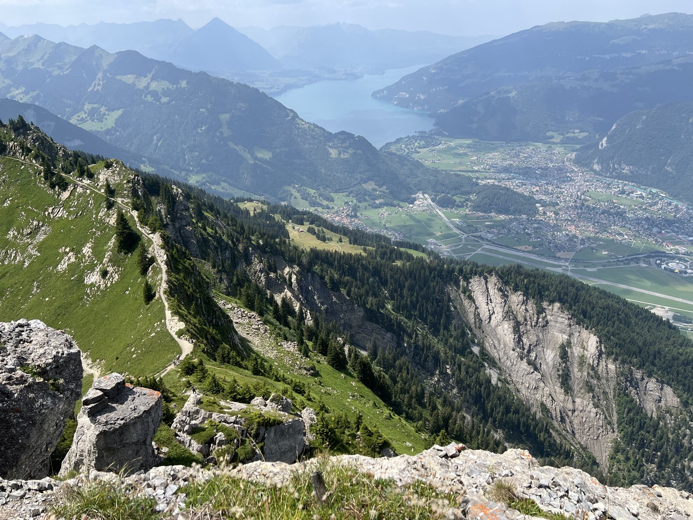
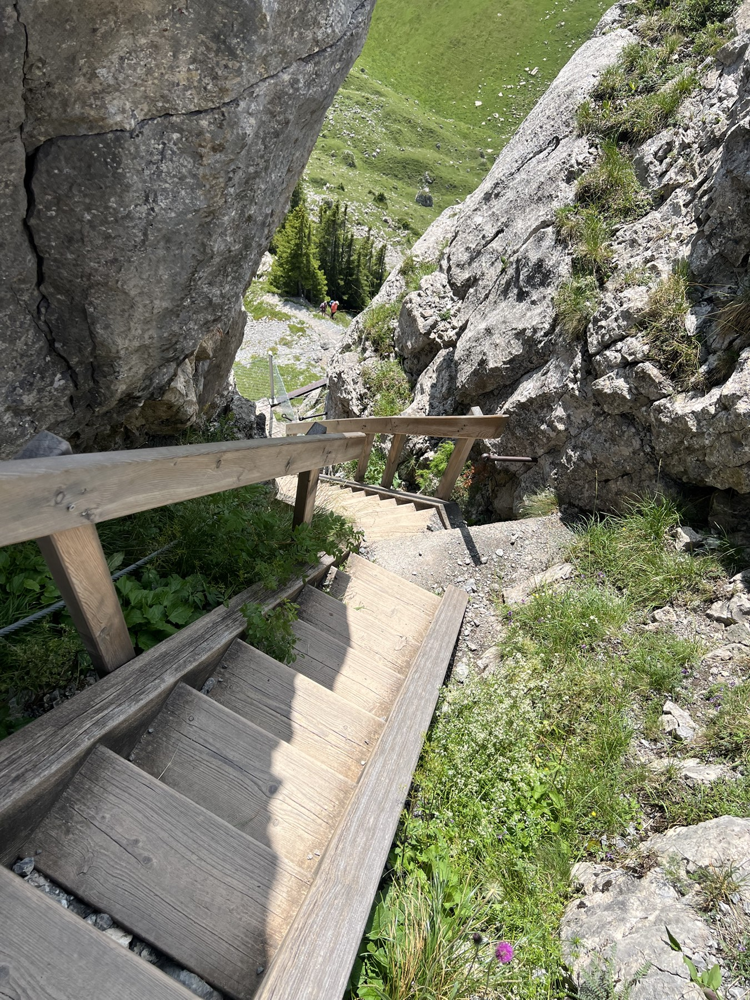
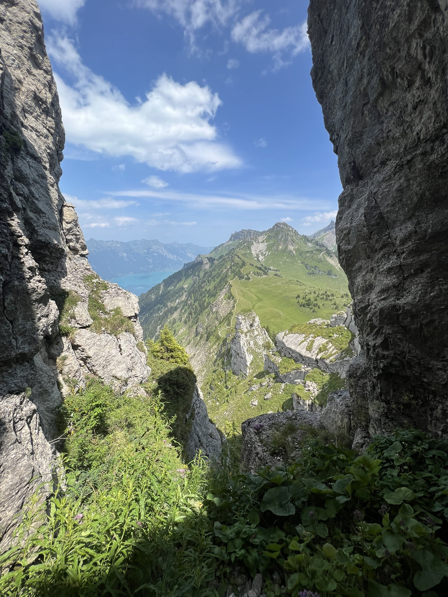
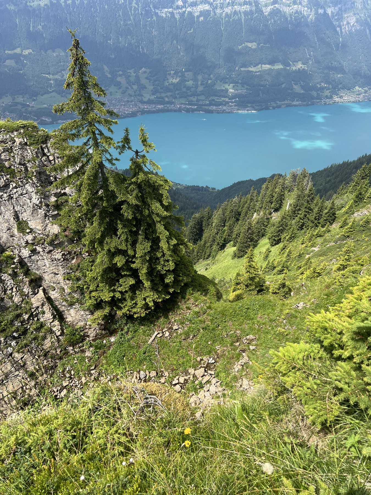
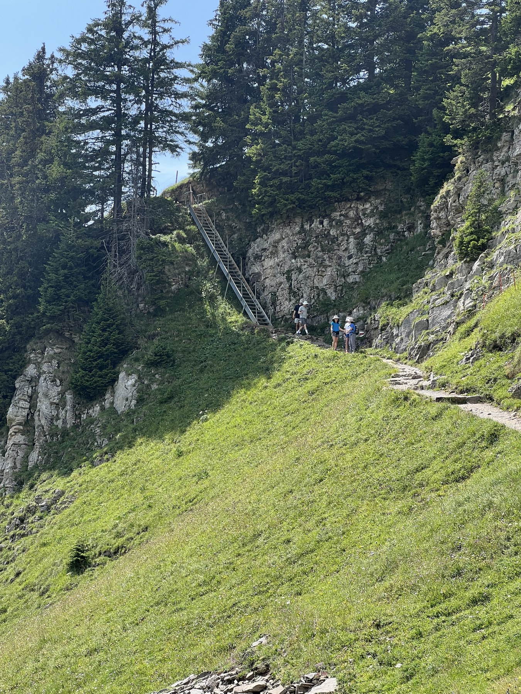
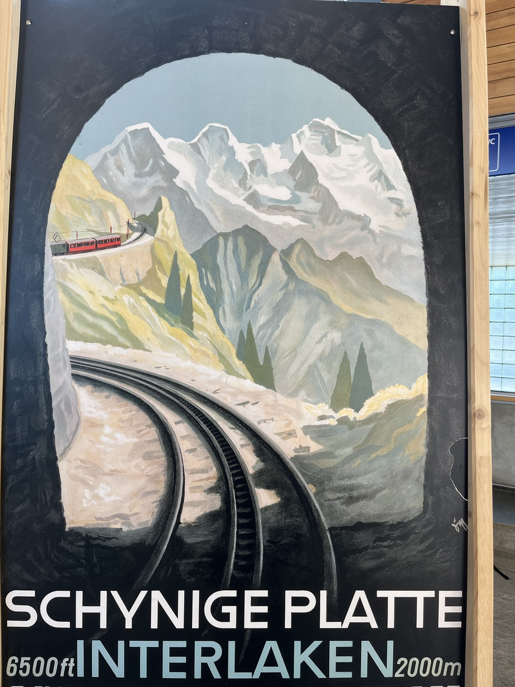